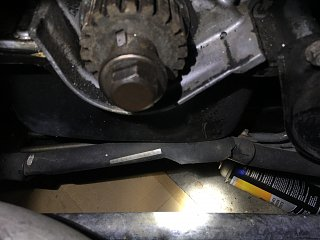
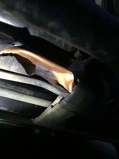

-
Hey guys so today I was taking my Z off some jack stands. Took them out and as I was slowly lowering the jack it slipped off and bent what I think is the AC Hose! Its next to the stabilizer bar , I followed one end to the firewall and the other to the compressor I think. Its too dark out now to take a picture but I'll post a picture when I get home from work tomorrow.
Its next to the stabilizer bar , I followed one end to the firewall and the other to the compressor I think. Its too dark out now to take a picture but I'll post a picture when I get home from work tomorrow.
I felt where it bent (right in the middle) and didn't feel like it bent it open. Is there anywhere where I can buy this AC Hose? I've checked RockAuto.com and AutoZone.com so far. It was a dumb accident :/ If anyone can let me know any sites for this I'd really appreciate it!Last edited by Quis; 09-19-2016, 09:56 AM. -
Those are aluminum and not actually hose but tubing wrapped in a insulation jacket, and it's pretty soft and can be flexible.
They're most likely not an item you can find in the aftermarket.
Your best bet is to find another set from a junked car, or another owner here or on the facebook buy/sell groups that have removed their A/C and still have the parts.
The system has to be de-pressurized before you install new lines, that is, if it didn't break the tube and the refrigerant leaked out or the system is alredy non-functional.
Depending on how badly bent they are, and if the A/C system is still working, you might get away with just bending them back and living with it. I've seen them
bent and dented on junkyard cars they seemed to be still functional.
84 AE/Shiro #683/Shiro #820/84 Turbo -
Thanks for the reply Karma
First picture is a top view, second one is a bottom view. (Engine bay is open right now cause I sent out some heads to get checked). I think its bent too much to bend back right?
I'll ask on Facebook and see if someone will reply there! Don't really like it there so much lol. This sucks so much though!
  -
yeesh, yeah that is pretty badly crushed.
yeah that is pretty badly crushed.
Has your a/c system been drained with the heads removed, or is it still pressurized.
84 AE/Shiro #683/Shiro #820/84 Turbo -
Yeah so I'm going on a search now lol
When I bought the car the guy told me it blows cold air. Still haven't even drove the car cause' I wanted to fix the blown head gasket first! We wanted to disconnect the tube from the compressor but just put it to the side instead as we were taking it apart to get to the heads. So still pressurized (not that bummed cause' my heads are back and parts are coming from the mail now). Glad it didn't get the other lines like this too!
But I didn't hear any kind of air coming out when it got bent up. I don't feel any cracks around there too. -
I'm one to err on the side of might as well do it.
If you break the seal on your A/C system be sure the servicing includes putting the system under vacuum to remove all moisture and oils before they relube and fill the system. While under vacuum, the pressure gauges will determine if the system is leak free before servicing.
The shop will likely require you switch to adapter fittings to utilize R134 VS the original refrigerant, but you may be able to find a source and shop that will work with R12 - not likely if you're in CA
Last edited by 88sinZ; 09-19-2016, 11:12 PM. -
What do you mean by that first line?
The seal on the compressor? Sorry for the noob question hah.
Yup I'm from California. And thanks for info/reply 88Sinz!
I just talked to the guy from Z31Online about an order I made then told him about this incident and referred me to a guy thats selling one. Also got a reply on a FB post. So maybe I can get my hands on one soon!
-
Are all the ac lines from each year the Same? I found one from an 88!

Copyright © 2006–. All rights reserved. Privacy Policy